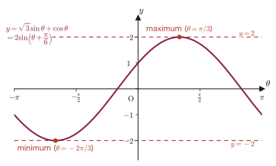

Chapter 5Trigonometric Addition Formulas and Related Formulas
In Chapter 3, we defined $\sin\theta,\cos\theta,\tan\theta$ as ratios of the sides of a right triangle, and then reinterpreted $(\cos\theta,\sin\theta)$ as the coordinates of a point on the unit circle. There, only a single angle $\theta$ was ever involved. So how can we build the trigonometric ratio $\cos(\alpha+\beta)$ of the angle $\alpha+\beta$, obtained by adding two angles $\alpha,\beta$, from $\cos\alpha$ and $\cos\beta$? The most common wrong answer is “surely $\cos(\alpha+\beta)=\cos\alpha+\cos\beta$,” but this is not correct. Indeed, if we take $\alpha=\beta=45^\circ$, the left-hand side is $\cos90^\circ=0$, whereas the right-hand side is $\cos45^\circ+\cos45^\circ=\sqrt2\approx1.41$, so the two sides do not agree at all. So what is the correct relation? Deriving it from the geometry of the unit circle is the starting point of this chapter, and we call the result the addition formula (also called the addition theorem).
The value of the addition formulas does not end with the formulas themselves. This chapter treats a total of 23 formulas, Formulas 5.1–5.23. Of these, after removing the four addition formulas that serve as the starting point ($\cos(\alpha\pm\beta)$ and $\sin(\alpha\pm\beta)$, Formulas 5.1–5.4), the remaining 19—the addition formula for tangent, the double-angle formulas, the half-angle formulas, the triple-angle formulas, the formulas that convert products into sums, the formulas that convert sums into products, and “harmonic addition,” which combines waves into a single sine wave—can in fact all be derived mechanically from just the four addition formulas. The chief goal of this chapter is not to memorize the formulas by rote but to develop the sense that “as long as we have the addition formulas at hand, we can always rebuild everything else ourselves.” Harmonic addition, $a\sin\theta+b\cos\theta=\sqrt{a^2+b^2}\sin(\theta+\alpha)$, which we learn last, is a tool used again and again for the superposition of oscillations in physics (the phase in AC circuits, the analysis of phonons, which are vibrations of a crystal lattice, and so on). Moreover, when you study complex numbers in university mathematics, the structure hidden behind this formula will crystallize into a still more beautiful form as Euler's formula $e^{i\theta}=\cos\theta+i\sin\theta$ (which you will meet in the chapter on complex analysis in Part 21).
- The four addition formulas: the proof of $\cos(\alpha\pm\beta)$ and $\sin(\alpha\pm\beta)$ using the unit circle, and why the wrong answer “$\cos(\alpha+\beta)=\cos\alpha+\cos\beta$” is wrong
- The addition formula for tangent:$\tan(\alpha\pm\beta)$ and its domain of definition ($\cos\alpha\cos\beta\neq0$, etc.)
- The double-angle formulas: $\sin2\alpha,\cos2\alpha,\tan2\alpha$—they are obtained simply by substituting $\beta=\alpha$ into the addition formulas
- The half-angle formulas: $\sin^2\frac{\alpha}{2},\cos^2\frac{\alpha}{2},\tan^2\frac{\alpha}{2}$—because the value is determined only in squared form, the sign must be considered separately
- The triple-angle formulas: $\sin3\alpha,\cos3\alpha$—the technique of substituting the double-angle formulas into $\sin(2\alpha+\alpha)$ and simplifying to an expression in a single variable
- The four product-to-sum formulas and the four sum-to-product formulas—they can be built simply by adding and subtracting addition formulas
- Harmonic addition $a\sin\theta+b\cos\theta=\sqrt{a^2+b^2}\sin(\theta+\alpha)$ and its application to maximum and minimum values
Source notes: Yasuhide Mochizuki, Mathematics Notes: High School Mathematics (handwritten lecture notes, in Japanese), pp. 13–20.
5.1 Building the Addition Formulas — Starting from Cosine
Our goal is to express $\cos(\alpha+\beta)$ in terms of $\cos\alpha,\sin\alpha,\cos\beta,\sin\beta$ alone. The key is the strategy of computing the distance between two points on the unit circle in two different ways and setting the two results equal.
5.1.1 Placing two pairs of points on the unit circle
Prepare two circles of radius 1 (unit circles), and take points on each of them as follows.
In the left circle, we take the point $A(1,0)$ (the point on the unit circle in the positive direction of the $x$-axis) as the reference. From there we draw an auxiliary dashed radius at the position rotated counterclockwise by the angle $\alpha$, and then take the point $B$ at the position rotated by a further angle $\beta$ from there. In other words, $B$ is the point obtained by rotating by the angle $\alpha+\beta$ from the positive direction of the $x$-axis, so by the definition of the coordinates of a point on the unit circle (Chapter 3), we have $B(\cos(\alpha+\beta),\sin(\alpha+\beta))$.
In the right circle, we take the point $C$ at the position rotated by the angle $\beta$ from the positive direction of the $x$-axis, so that $C(\cos\beta,\sin\beta)$. We also take the point $D$ at the position rotated by the angle $-\alpha$ (that is, by the angle $\alpha$ clockwise) from the positive direction of the $x$-axis, so that $D(\cos\alpha,-\sin\alpha)$. Here we used $\cos(-\alpha)=\cos\alpha$ and $\sin(-\alpha)=-\sin\alpha$—these hold because reversing the sign of an angle reflects the point on the unit circle across the $x$-axis, so the $x$-coordinate ($=\cos$) is unchanged and only the sign of the $y$-coordinate ($=\sin$) changes.
Intuition: Why does $AB=CD$ hold?
In the left figure, the central angle $\angle AOB$ subtending the chord $AB$ is exactly the rotation angle from $A$ to $B$, so it equals $\alpha+\beta$. In the right figure, the central angle $\angle COD$ subtending the chord $CD$ is the rotation angle from $D$ (the position at the angle $-\alpha$) to $C$ (the position at the angle $\beta$), that is, $\beta-(-\alpha)=\alpha+\beta$, which is again $\alpha+\beta$. Moreover, $OA=OB=OC=OD=1$ (all are radii of the unit circle), so triangles $OAB$ and $OCD$ are congruent because “two sides and the included angle are respectively equal” (SAS, already covered in junior high school mathematics). Corresponding sides of congruent triangles have equal lengths, so $AB=CD$ holds.
Now we are ready. All we need to do is compute $AB$ and $CD$ from their respective coordinates by the distance formula for two points, $\sqrt{(x_2-x_1)^2+(y_2-y_1)^2}$ (the Pythagorean theorem), and set $AB=CD$ (it is enough to use the squared form $AB^2=CD^2$).
5.1.2 The formula for $\cos(\alpha+\beta)$
Formula 5.1: Addition formula for cosine (sum)
$$ \begin{equation} \cos(\alpha+\beta)=\cos\alpha\cos\beta-\sin\alpha\sin\beta \label{eq:5-cos-sum} \end{equation} $$Proof
By the distance formula for two points,
$$ AB^2=\{\cos(\alpha+\beta)-1\}^2+\{\sin(\alpha+\beta)-0\}^2,\qquad CD^2=(\cos\alpha-\cos\beta)^2+(-\sin\alpha-\sin\beta)^2 . $$First we expand the left-hand side. Using $\cos^2(\alpha+\beta)+\sin^2(\alpha+\beta)=1$ (the basic identity from Chapter 3), we get
$$ AB^2=\cos^2(\alpha+\beta)-2\cos(\alpha+\beta)+1+\sin^2(\alpha+\beta)=2-2\cos(\alpha+\beta) . $$Next we expand the right-hand side. Using $\cos^2\alpha+\sin^2\alpha=1$ and $\cos^2\beta+\sin^2\beta=1$, we get
$$ \begin{aligned} CD^2&=\cos^2\alpha-2\cos\alpha\cos\beta+\cos^2\beta+\sin^2\alpha+2\sin\alpha\sin\beta+\sin^2\beta\\ &=(\cos^2\alpha+\sin^2\alpha)+(\cos^2\beta+\sin^2\beta)-2\cos\alpha\cos\beta+2\sin\alpha\sin\beta\\ &=2-2\cos\alpha\cos\beta+2\sin\alpha\sin\beta . \end{aligned} $$Since $AB=CD$, that is, $AB^2=CD^2$,
$$ 2-2\cos(\alpha+\beta)=2-2\cos\alpha\cos\beta+2\sin\alpha\sin\beta=2-2(\cos\alpha\cos\beta-\sin\alpha\sin\beta) . $$Subtracting $2$ from both sides and dividing by $-2$, we obtain
$$ \cos(\alpha+\beta)=\cos\alpha\cos\beta-\sin\alpha\sin\beta $$which is the desired formula.
∎
Caution: $\cos(\alpha+\beta)\neq\cos\alpha+\cos\beta$
The formula we derived has the form in which a product, $\sin\alpha\sin\beta$, is subtracted from the product $\cos\alpha\cos\beta$, so it is not a simple sum such as $\cos\alpha+\cos\beta$. For example, when $\alpha=\beta=45^\circ$, Formula 5.1 gives $\cos90^\circ=\cos45^\circ\cos45^\circ-\sin45^\circ\sin45^\circ=\dfrac{\sqrt2}{2}\cdot\dfrac{\sqrt2}{2}-\dfrac{\sqrt2}{2}\cdot\dfrac{\sqrt2}{2}=\dfrac12-\dfrac12=0$, which agrees with the actual value $\cos90^\circ=0$. On the other hand, $\cos45^\circ+\cos45^\circ=\sqrt2\approx1.41$, which is a completely different value.
5.1.3 The formula for $\cos(\alpha-\beta)$
Next we find $\cos(\alpha-\beta)$. There is no need to prove it all over again; it suffices to replace $\beta$ in Formula 5.1 by $-\beta$.
Formula 5.2: Addition formula for cosine (difference)
$$ \begin{equation} \cos(\alpha-\beta)=\cos\alpha\cos\beta+\sin\alpha\sin\beta \label{eq:5-cos-diff} \end{equation} $$Proof
In Formula 5.1 (Eq. \eqref{eq:5-cos-sum}), replace $\beta$ by $-\beta$. Using $\cos(-\beta)=\cos\beta$ and $\sin(-\beta)=-\sin\beta$, we get
$$ \cos\{\alpha+(-\beta)\}=\cos\alpha\cos(-\beta)-\sin\alpha\sin(-\beta)=\cos\alpha\cos\beta-\sin\alpha\cdot(-\sin\beta) . $$The left-hand side is exactly $\cos(\alpha-\beta)$, and on the right-hand side the two minus signs in $-\sin\alpha\cdot(-\sin\beta)$ combine to give $+\sin\alpha\sin\beta$, so we obtain
$$ \cos(\alpha-\beta)=\cos\alpha\cos\beta+\sin\alpha\sin\beta $$which is the desired formula.
∎
Example 5.1: The value of $\cos15^\circ$
Find the value of $\cos15^\circ$ using the addition formula.
Solution. Writing $15^\circ=45^\circ-30^\circ$, we use Formula 5.2. With $\alpha=45^\circ,\beta=30^\circ$, we have
$$ \cos15^\circ=\cos(45^\circ-30^\circ)=\cos45^\circ\cos30^\circ+\sin45^\circ\sin30^\circ . $$Substituting $\cos45^\circ=\dfrac{\sqrt2}{2}$, $\sin45^\circ=\dfrac{\sqrt2}{2}$, $\cos30^\circ=\dfrac{\sqrt3}{2}$, $\sin30^\circ=\dfrac12$, we get
$$ \cos15^\circ=\frac{\sqrt2}{2}\cdot\frac{\sqrt3}{2}+\frac{\sqrt2}{2}\cdot\frac12=\frac{\sqrt6}{4}+\frac{\sqrt2}{4}=\frac{\sqrt6+\sqrt2}{4}\approx0.9659 . $$(In Example 5.6 of Section 5.3, we will confirm that the half-angle formula gives the same value.)
5.2 Addition Formulas for Sine and Tangent
Now that we have the addition formulas for cosine (Formulas 5.1 and 5.2), we build the addition formulas for sine and tangent on top of them. There is no need to redo the unit-circle proof from scratch—all we have to do is manipulate formulas we already have—and that is the theme of this section.
5.2.1 Recalling the complementary-angle formulas
For this we use the property of the “complementary angle” (the angle obtained by subtracting an angle from $90^\circ$):
$$ \cos\left(\frac{\pi}{2}-x\right)=\sin x,\qquad \sin\left(\frac{\pi}{2}-x\right)=\cos x $$(This restates the relation familiar since junior high school—the two acute angles of a right triangle add up to $90^\circ$, and the sine of one equals the cosine of the other—in the language of sine and cosine from Definition 3.1 in Chapter 3.) In fact, this property can also be derived from Formula 5.2: setting $\alpha=\dfrac{\pi}{2},\ \beta=x$ in Formula 5.2 and using $\cos\dfrac{\pi}{2}=0,\ \sin\dfrac{\pi}{2}=1$, we have
$$ \cos\left(\frac{\pi}{2}-x\right)=\cos\frac{\pi}{2}\cos x+\sin\frac{\pi}{2}\sin x=0\cdot\cos x+1\cdot\sin x=\sin x $$so it can indeed be derived. The identity $\sin\left(\dfrac{\pi}{2}-x\right)=\cos x$ is also obtained by swapping the left and right sides of the same equation and reading it with the substitution $x\to\dfrac{\pi}{2}-x$ (note that $\dfrac{\pi}{2}-\left(\dfrac{\pi}{2}-x\right)=x$).
5.2.2 $\sin(\alpha+\beta)$ and $\sin(\alpha-\beta)$
Formula 5.3: Addition formula for sine (sum)
$$ \begin{equation} \sin(\alpha+\beta)=\sin\alpha\cos\beta+\cos\alpha\sin\beta \label{eq:5-sin-sum} \end{equation} $$Proof
In Formula 5.2 (Eq. \eqref{eq:5-cos-diff}), replace $\alpha$ by $\dfrac{\pi}{2}-\alpha$.
$$ \cos\left\{\left(\frac{\pi}{2}-\alpha\right)-\beta\right\}=\cos\left(\frac{\pi}{2}-\alpha\right)\cos\beta+\sin\left(\frac{\pi}{2}-\alpha\right)\sin\beta . $$On the left-hand side, simplifying the inside of the braces gives $\dfrac{\pi}{2}-\alpha-\beta=\dfrac{\pi}{2}-(\alpha+\beta)$, so by the complementary-angle formula of Section 5.2.1 (the case $x=\alpha+\beta$),
$$ \cos\left\{\frac{\pi}{2}-(\alpha+\beta)\right\}=\sin(\alpha+\beta) . $$On the right-hand side, substituting the complementary-angle formulas of Section 5.2.1 (the case $x=\alpha$), $\cos\left(\dfrac{\pi}{2}-\alpha\right)=\sin\alpha,\ \sin\left(\dfrac{\pi}{2}-\alpha\right)=\cos\alpha$, turns it into
$$ \sin\alpha\cos\beta+\cos\alpha\sin\beta $$Putting the left-hand and right-hand sides together, we obtain
$$ \sin(\alpha+\beta)=\sin\alpha\cos\beta+\cos\alpha\sin\beta $$which is the desired formula.
∎
Formula 5.4: Addition formula for sine (difference)
$$ \begin{equation} \sin(\alpha-\beta)=\sin\alpha\cos\beta-\cos\alpha\sin\beta \label{eq:5-sin-diff} \end{equation} $$Proof
In Formula 5.3 (Eq. \eqref{eq:5-sin-sum}), replace $\beta$ by $-\beta$. Since $\cos(-\beta)=\cos\beta,\ \sin(-\beta)=-\sin\beta$,
$$ \sin\{\alpha+(-\beta)\}=\sin\alpha\cos(-\beta)+\cos\alpha\sin(-\beta)=\sin\alpha\cos\beta+\cos\alpha\cdot(-\sin\beta) . $$The left-hand side is exactly $\sin(\alpha-\beta)$, so we obtain
$$ \sin(\alpha-\beta)=\sin\alpha\cos\beta-\cos\alpha\sin\beta $$which is the desired formula.
∎
Math Note: How to remember the signs
Lining up the four formulas so far, we see a pattern: in the sine formulas, the sign on the left-hand side appears unchanged on the right-hand side (the $-$ in “$\sin(\alpha-\beta)$” is also $-$ on the right-hand side), whereas in the cosine formulas, the sign on the left-hand side is reversed on the right-hand side (the $-$ in “$\cos(\alpha-\beta)$” becomes $+$ on the right-hand side). This helps with memorization, but it is far more important to be able to derive the formulas yourself when you forget them.
5.2.3 $\tan(\alpha+\beta)$ and $\tan(\alpha-\beta)$
The tangent is defined as the ratio of sine to cosine, $\tan\theta=\dfrac{\sin\theta}{\cos\theta}$ (Chapter 3), so it suffices to substitute Formulas 5.1 and 5.3 into $\tan(\alpha+\beta)=\dfrac{\sin(\alpha+\beta)}{\cos(\alpha+\beta)}$ and divide the numerator and denominator by $\cos\alpha\cos\beta$, which turns the expression into one in $\tan\alpha,\tan\beta$ only (we assume $\cos\alpha\neq0,\ \cos\beta\neq0$).
Formula 5.5: Addition formula for tangent (sum)
$$ \begin{equation} \tan(\alpha+\beta)=\frac{\tan\alpha+\tan\beta}{1-\tan\alpha\tan\beta} \label{eq:5-tan-sum} \end{equation} $$Proof
$$ \tan(\alpha+\beta)=\frac{\sin(\alpha+\beta)}{\cos(\alpha+\beta)}=\frac{\sin\alpha\cos\beta+\cos\alpha\sin\beta}{\cos\alpha\cos\beta-\sin\alpha\sin\beta} . $$Dividing the numerator and denominator by $\cos\alpha\cos\beta$ (assuming that neither is $0$), every term takes the form of either $\tan\alpha=\dfrac{\sin\alpha}{\cos\alpha}$ or $\tan\beta=\dfrac{\sin\beta}{\cos\beta}$.
$$ \tan(\alpha+\beta)=\frac{\dfrac{\sin\alpha\cos\beta}{\cos\alpha\cos\beta}+\dfrac{\cos\alpha\sin\beta}{\cos\alpha\cos\beta}}{1-\dfrac{\sin\alpha\sin\beta}{\cos\alpha\cos\beta}}=\frac{\dfrac{\sin\alpha}{\cos\alpha}+\dfrac{\sin\beta}{\cos\beta}}{1-\dfrac{\sin\alpha}{\cos\alpha}\cdot\dfrac{\sin\beta}{\cos\beta}}=\frac{\tan\alpha+\tan\beta}{1-\tan\alpha\tan\beta} . $$∎
Caution: Domain of definition
In addition to $\cos\alpha\neq0,\ \cos\beta\neq0$ (that is, $\tan\alpha,\tan\beta$ themselves must be defined), this formula requires the denominator on the right-hand side to satisfy $1-\tan\alpha\tan\beta\neq0$, that is, $\alpha+\beta\neq\dfrac{\pi}{2}+n\pi$ ($n$ is an integer). Indeed, when $\alpha+\beta=\dfrac{\pi}{2}$, $\tan(\alpha+\beta)$ itself is not defined, so this is a natural restriction.
Formula 5.6: Addition formula for tangent (difference)
$$ \begin{equation} \tan(\alpha-\beta)=\frac{\tan\alpha-\tan\beta}{1+\tan\alpha\tan\beta} \label{eq:5-tan-diff} \end{equation} $$Proof
In Formula 5.5 (Eq. \eqref{eq:5-tan-sum}), replace $\beta$ by $-\beta$. Since $\tan(-\beta)=\dfrac{\sin(-\beta)}{\cos(-\beta)}=\dfrac{-\sin\beta}{\cos\beta}=-\tan\beta$, we obtain
$$ \tan(\alpha-\beta)=\tan\{\alpha+(-\beta)\}=\frac{\tan\alpha+(-\tan\beta)}{1-\tan\alpha\cdot(-\tan\beta)}=\frac{\tan\alpha-\tan\beta}{1+\tan\alpha\tan\beta} $$which is the desired formula.
∎
Example 5.2: The value of $\sin105^\circ$
Use the addition formulas to find the value of $\sin105^\circ$.
Solution. Viewing $105^\circ=60^\circ+45^\circ$, we use Formula 5.3.
$$ \sin105^\circ=\sin(60^\circ+45^\circ)=\sin60^\circ\cos45^\circ+\cos60^\circ\sin45^\circ . $$Substituting $\sin60^\circ=\dfrac{\sqrt3}{2},\ \cos60^\circ=\dfrac12,\ \cos45^\circ=\sin45^\circ=\dfrac{\sqrt2}{2}$, we get
$$ \sin105^\circ=\frac{\sqrt3}{2}\cdot\frac{\sqrt2}{2}+\frac12\cdot\frac{\sqrt2}{2}=\frac{\sqrt6}{4}+\frac{\sqrt2}{4}=\frac{\sqrt6+\sqrt2}{4} . $$This is exactly the same value as the $\cos15^\circ$ found in Example 5.1. Indeed, $\sin105^\circ=\sin(180^\circ-105^\circ)=\sin75^\circ=\cos(90^\circ-75^\circ)=\cos15^\circ$, so it is only natural that the two agree.
Example 5.3: The value of $\tan15^\circ$
Use the addition formulas to find the value of $\tan15^\circ$.
Solution. Viewing $15^\circ=45^\circ-30^\circ$, we use Formula 5.6. Since $\tan45^\circ=1,\ \tan30^\circ=\dfrac{1}{\sqrt3}$,
$$ \tan15^\circ=\tan(45^\circ-30^\circ)=\frac{\tan45^\circ-\tan30^\circ}{1+\tan45^\circ\tan30^\circ}=\frac{1-\dfrac{1}{\sqrt3}}{1+\dfrac{1}{\sqrt3}} . $$Multiplying the numerator and denominator by $\sqrt3$ and simplifying, we get
$$ \tan15^\circ=\frac{\sqrt3-1}{\sqrt3+1}=\frac{(\sqrt3-1)^2}{(\sqrt3+1)(\sqrt3-1)}=\frac{3-2\sqrt3+1}{3-1}=\frac{4-2\sqrt3}{2}=2-\sqrt3\approx0.2679 . $$(To rationalize the denominator, we multiplied the numerator and denominator by $\sqrt3-1$ and used $(\sqrt3+1)(\sqrt3-1)=3-1=2$.)
Example 5.4: Proof of the identity $\sin(\alpha+\beta)\sin(\alpha-\beta)=\sin^2\alpha-\sin^2\beta$
Use the addition formulas to prove that $\sin(\alpha+\beta)\sin(\alpha-\beta)=\sin^2\alpha-\sin^2\beta$ holds for any angles $\alpha,\beta$.
Solution. We substitute Formulas 5.3 and 5.4 into the left-hand side.
$$ \sin(\alpha+\beta)\sin(\alpha-\beta)=(\sin\alpha\cos\beta+\cos\alpha\sin\beta)(\sin\alpha\cos\beta-\cos\alpha\sin\beta) . $$The right-hand side has the form $(X+Y)(X-Y)=X^2-Y^2$ (the factoring formula, with $X=\sin\alpha\cos\beta,\ Y=\cos\alpha\sin\beta$, used in the reverse direction), so
$$ \sin(\alpha+\beta)\sin(\alpha-\beta)=\sin^2\alpha\cos^2\beta-\cos^2\alpha\sin^2\beta . $$Since our goal is an expression in $\sin\alpha,\sin\beta$ only, we substitute the basic identities $\cos^2\beta=1-\sin^2\beta,\ \cos^2\alpha=1-\sin^2\alpha$ (Chapter 3) to eliminate $\cos^2\alpha,\cos^2\beta$.
$$ \begin{aligned} \sin(\alpha+\beta)\sin(\alpha-\beta)&=\sin^2\alpha(1-\sin^2\beta)-(1-\sin^2\alpha)\sin^2\beta\\ &=(\sin^2\alpha-\sin^2\alpha\sin^2\beta)-(\sin^2\beta-\sin^2\alpha\sin^2\beta)\\ &=\sin^2\alpha-\sin^2\beta . \end{aligned} $$From the first line to the second, we expanded using the distributive law; from the second line to the third, we used the fact that the two terms $\sin^2\alpha\sin^2\beta$ cancel each other, since $-\sin^2\alpha\sin^2\beta+\sin^2\alpha\sin^2\beta=0$. Hence we have shown that $\sin(\alpha+\beta)\sin(\alpha-\beta)=\sin^2\alpha-\sin^2\beta$.
∎
5.3 Double-Angle and Half-Angle Formulas
The addition formulas were formulas for two independent angles $\alpha,\beta$. If we now boldly specialize to $\beta=\alpha$, then $\alpha+\beta=2\alpha$, and without proving anything new we obtain formulas for an angle that is twice a single angle.
5.3.1 Double-angle formulas
Formula 5.7: Double-angle formula (sine)
$$ \begin{equation} \sin2\alpha=2\sin\alpha\cos\alpha \label{eq:5-double-sin} \end{equation} $$Proof
Let $\beta=\alpha$ in Formula 5.3 (Eq. \eqref{eq:5-sin-sum}).
$$ \sin(\alpha+\alpha)=\sin\alpha\cos\alpha+\cos\alpha\sin\alpha=2\sin\alpha\cos\alpha . $$The left-hand side is simply $\sin2\alpha$, so we obtain $\sin2\alpha=2\sin\alpha\cos\alpha$.
∎
Formula 5.8: Double-angle formula (cosine)
$$ \begin{equation} \cos2\alpha=2\cos^2\alpha-1=1-2\sin^2\alpha \label{eq:5-double-cos} \end{equation} $$Proof
Let $\beta=\alpha$ in Formula 5.1 (Eq. \eqref{eq:5-cos-sum}).
$$ \cos(\alpha+\alpha)=\cos\alpha\cos\alpha-\sin\alpha\sin\alpha=\cos^2\alpha-\sin^2\alpha . $$So far we have $\cos2\alpha=\cos^2\alpha-\sin^2\alpha$, an expression in which both $\cos$ and $\sin$ appear. We now tidy this up into two forms.
(i) Turn it into an expression in $\cos\alpha$ alone: Substituting the basic identity $\sin^2\alpha=1-\cos^2\alpha$ (Chapter 3), we get
$$ \cos2\alpha=\cos^2\alpha-(1-\cos^2\alpha)=2\cos^2\alpha-1 . $$(ii) Turn it into an expression in $\sin\alpha$ alone: This time we substitute the basic identity $\cos^2\alpha=1-\sin^2\alpha$, which gives
$$ \cos2\alpha=(1-\sin^2\alpha)-\sin^2\alpha=1-2\sin^2\alpha . $$Both expressions represent the same $\cos2\alpha$, so $\cos2\alpha=2\cos^2\alpha-1=1-2\sin^2\alpha$ holds.
∎
Formula 5.9: Double-angle formula (tangent)
$$ \begin{equation} \tan2\alpha=\frac{2\tan\alpha}{1-\tan^2\alpha} \label{eq:5-double-tan} \end{equation} $$Proof
Let $\beta=\alpha$ in Formula 5.5 (Eq. \eqref{eq:5-tan-sum}).
$$ \tan(\alpha+\alpha)=\frac{\tan\alpha+\tan\alpha}{1-\tan\alpha\tan\alpha}=\frac{2\tan\alpha}{1-\tan^2\alpha} $$This is the desired formula (we assume that $\cos\alpha\neq0$ and $1-\tan^2\alpha\neq0$, that is, $\alpha\neq\dfrac{\pi}{4}+\dfrac{n\pi}{2}$).
∎
Math Note: Remember only the addition formulas and you can build all the rest
Formulas 5.7–5.9 were obtained simply by substituting $\beta=\alpha$ into the addition formulas. The half-angle, triple-angle, product-to-sum, and sum-to-product formulas that follow can all be built in exactly the same way, by repeating one and the same procedure: “substitute into the addition formulas and tidy up with $\sin^2+\cos^2=1$.” There is no need to memorize more and more formulas by rote. As long as you have the four addition formulas (Formulas 5.1–5.4) and $\sin^2\theta+\cos^2\theta=1$ at hand, you can derive everything else on the spot.
Example 5.5: Using the double-angle formulas
Suppose $0\lt\theta\lt\dfrac{\pi}{2}$ and $\cos\theta=\dfrac35$. Find the values of $\sin2\theta,\cos2\theta,\tan2\theta$.
Solution. Since $0\lt\theta\lt\dfrac{\pi}{2}$ (the first quadrant), $\sin\theta>0$. From $\sin^2\theta=1-\cos^2\theta=1-\dfrac{9}{25}=\dfrac{16}{25}$ we get $\sin\theta=\dfrac45$. Substituting into Formulas 5.7, 5.8, and 5.9, we obtain
$$ \sin2\theta=2\sin\theta\cos\theta=2\cdot\frac45\cdot\frac35=\frac{24}{25}, $$ $$ \cos2\theta=2\cos^2\theta-1=2\cdot\frac{9}{25}-1=\frac{18}{25}-\frac{25}{25}=-\frac{7}{25}, $$ $$ \tan2\theta=\frac{\sin2\theta}{\cos2\theta}=\frac{24/25}{-7/25}=-\frac{24}{7} . $$(We get the same value for $\cos2\theta$ if we compute it as $1-2\sin^2\theta=1-2\cdot\dfrac{16}{25}=1-\dfrac{32}{25}=-\dfrac{7}{25}$. For $\tan2\theta$, substituting $\tan\theta=\dfrac{4/5}{3/5}=\dfrac43$ into $\dfrac{2\tan\theta}{1-\tan^2\theta}$ gives $\dfrac{2\cdot4/3}{1-16/9}=\dfrac{8/3}{-7/9}=-\dfrac{24}{7}$, which agrees. Since $\cos2\theta\lt0$, we also see that $2\theta$ lies in the second quadrant.)
5.3.2 Half-angle formulas
The double-angle Formula 5.8 gave a relation between $\cos2\theta$ and $\cos^2\theta$ (or $\sin^2\theta$). If we read this relation in reverse—that is, express $\sin^2\theta,\cos^2\theta$ in terms of $\cos2\theta$—we obtain formulas for “the square of a trigonometric ratio of half an angle.”
Formula 5.10: Half-angle formula (square of sine)
$$ \begin{equation} \sin^2\frac{\alpha}{2}=\frac{1-\cos\alpha}{2} \label{eq:5-half-sin2} \end{equation} $$Proof
Solving $\cos2\theta=1-2\sin^2\theta$ in Formula 5.8 for $\sin^2\theta$, we get
$$ 2\sin^2\theta=1-\cos2\theta,\qquad \sin^2\theta=\frac{1-\cos2\theta}{2} . $$This relation holds for the angle $\theta$, so we may substitute any angle for $\theta$. Therefore we set $\theta=\dfrac{\alpha}{2}$ (that is, $2\theta=\alpha$) and obtain
$$ \sin^2\frac{\alpha}{2}=\frac{1-\cos\alpha}{2} $$which is the desired formula.
∎
Formula 5.11: Half-angle formula (square of cosine)
$$ \begin{equation} \cos^2\frac{\alpha}{2}=\frac{1+\cos\alpha}{2} \label{eq:5-half-cos2} \end{equation} $$Proof
Solving $\cos2\theta=2\cos^2\theta-1$ in Formula 5.8 for $\cos^2\theta$, we get $\cos^2\theta=\dfrac{1+\cos2\theta}{2}$. Setting $\theta=\dfrac{\alpha}{2}$, we obtain
$$ \cos^2\frac{\alpha}{2}=\frac{1+\cos\alpha}{2} $$which is the desired formula.
∎
Formula 5.12: Half-angle formula (square of tangent)
$$ \begin{equation} \tan^2\frac{\alpha}{2}=\frac{1-\cos\alpha}{1+\cos\alpha} \label{eq:5-half-tan2} \end{equation} $$Proof
Substituting Formulas 5.10 and 5.11 (Eqs. \eqref{eq:5-half-sin2} and \eqref{eq:5-half-cos2}) into $\tan^2\dfrac{\alpha}{2}=\dfrac{\sin^2(\alpha/2)}{\cos^2(\alpha/2)}$, we get
$$ \tan^2\frac{\alpha}{2}=\dfrac{\dfrac{1-\cos\alpha}{2}}{\dfrac{1+\cos\alpha}{2}}=\frac{1-\cos\alpha}{1+\cos\alpha} $$which is the desired formula (we assume that $\cos\alpha\neq-1$).
∎
Caution: The half-angle formulas tell us only the “square”
Formulas 5.10–5.12 give only the values of the squares $\sin^2(\alpha/2),\cos^2(\alpha/2),\tan^2(\alpha/2)$. As for the sign of $\sin(\alpha/2)$ itself, we must decide on our own whether it is $+$ or $-$ by separately checking which quadrant $\dfrac{\alpha}{2}$ lies in (because squaring loses the information about the sign). We will actually make this decision in Example 5.6.
Example 5.6: Finding $\cos15^\circ$ with the half-angle formula and comparing with Example 5.1
Use the half-angle formula to find the value of $\cos15^\circ$, and confirm that it agrees with the result of Example 5.1.
Solution. Noting that $15^\circ=\dfrac{30^\circ}{2}$, we substitute $\alpha=30^\circ$ into Formula 5.11. Since $\cos30^\circ=\dfrac{\sqrt3}{2}$,
$$ \cos^2 15^\circ=\frac{1+\cos30^\circ}{2}=\frac{1+\dfrac{\sqrt3}{2}}{2}=\frac{2+\sqrt3}{4} . $$Now we determine the sign: since $0^\circ\lt15^\circ\lt90^\circ$ (the first quadrant), $\cos15^\circ>0$; that is, we take the positive square root.
$$ \cos15^\circ=\sqrt{\frac{2+\sqrt3}{4}}=\frac{\sqrt{2+\sqrt3}}{2} . $$Let us check that this expression has the same value as $\dfrac{\sqrt6+\sqrt2}{4}$ in Example 5.1. We have $\left(\dfrac{\sqrt6+\sqrt2}{4}\right)^2=\dfrac{6+2\sqrt{12}+2}{16}=\dfrac{8+4\sqrt3}{16}=\dfrac{2+\sqrt3}{4}$, which indeed agrees with $\cos^2 15^\circ=\dfrac{2+\sqrt3}{4}$. Moreover, since $\dfrac{\sqrt6+\sqrt2}{4}>0$, the value agrees completely with that of Example 5.1, sign included.
5.4 Triple-Angle Formulas
Writing $3\alpha=2\alpha+\alpha$, we can build $\sin3\alpha,\cos3\alpha$ by combining the double-angle formulas (already known) with the addition formulas. The key point here is to make use of the fact that the double-angle formula $\cos2\alpha=2\cos^2\alpha-1=1-2\sin^2\alpha$ can be written in two ways, and to choose between them as needed.
Formula 5.13: Triple-angle formula (sine)
$$ \begin{equation} \sin3\alpha=3\sin\alpha-4\sin^3\alpha \label{eq:5-triple-sin} \end{equation} $$Proof
By the addition formula (Formula 5.3),
$$ \sin3\alpha=\sin(2\alpha+\alpha)=\sin2\alpha\cos\alpha+\cos2\alpha\sin\alpha . $$Since our goal is an expression in $\sin\alpha$ alone, we choose for $\cos2\alpha$ the form that can be written with $\sin$ only, $\cos2\alpha=1-2\sin^2\alpha$ (the second form in Formula 5.8), and substitute it. Substituting $\sin2\alpha=2\sin\alpha\cos\alpha$ (Formula 5.7) as well, we obtain
$$ \sin3\alpha=2\sin\alpha\cos\alpha\cdot\cos\alpha+(1-2\sin^2\alpha)\sin\alpha=2\sin\alpha\cos^2\alpha+(1-2\sin^2\alpha)\sin\alpha . $$Since $\cos^2\alpha$ still remains, we eliminate it by substituting $\cos^2\alpha=1-\sin^2\alpha$ (the basic identity).
$$ \begin{aligned} \sin3\alpha&=2\sin\alpha(1-\sin^2\alpha)+(1-2\sin^2\alpha)\sin\alpha\\ &=(2\sin\alpha-2\sin^3\alpha)+(\sin\alpha-2\sin^3\alpha)\\ &=3\sin\alpha-4\sin^3\alpha . \end{aligned} $$From the first line to the second we expanded using the distributive law, and from the second line to the third we combined the $\sin\alpha$ terms ($2\sin\alpha+\sin\alpha=3\sin\alpha$) and the $\sin^3\alpha$ terms ($-2\sin^3\alpha-2\sin^3\alpha=-4\sin^3\alpha$).
∎
Formula 5.14: Triple-angle formula (cosine)
$$ \begin{equation} \cos3\alpha=-3\cos\alpha+4\cos^3\alpha \label{eq:5-triple-cos} \end{equation} $$Proof
By the addition formula (Formula 5.1),
$$ \cos3\alpha=\cos(2\alpha+\alpha)=\cos2\alpha\cos\alpha-\sin2\alpha\sin\alpha . $$This time we want an expression in $\cos\alpha$ alone, so we choose $\cos2\alpha=2\cos^2\alpha-1$ (the first form in Formula 5.8) and substitute it. Substituting $\sin2\alpha=2\sin\alpha\cos\alpha$ as well, we obtain
$$ \cos3\alpha=(2\cos^2\alpha-1)\cos\alpha-2\sin\alpha\cos\alpha\cdot\sin\alpha=2\cos^3\alpha-\cos\alpha-2\cos\alpha\sin^2\alpha . $$We eliminate the remaining $\sin^2\alpha$ by substituting $\sin^2\alpha=1-\cos^2\alpha$ for it.
$$ \begin{aligned} \cos3\alpha&=2\cos^3\alpha-\cos\alpha-2\cos\alpha(1-\cos^2\alpha)\\ &=2\cos^3\alpha-\cos\alpha-2\cos\alpha+2\cos^3\alpha\\ &=4\cos^3\alpha-3\cos\alpha=-3\cos\alpha+4\cos^3\alpha . \end{aligned} $$∎
Intuition: Which double-angle expression to choose
Formula 5.8 gave two ways of writing the cosine of a double angle: $\cos2\alpha=2\cos^2\alpha-1$ and $\cos2\alpha=1-2\sin^2\alpha$. When we build $\sin3\alpha$ (where we want an expression in $\sin$ only), we choose the $\sin$ form; when we build $\cos3\alpha$ (where we want an expression in $\cos$ only), we choose the $\cos$ form—this is a basic technique, “choose whichever of the equivalent expressions is convenient to match the target variable,” that we will use over and over in the mathematics ahead (especially in university calculus and in physics calculations).
Example 5.7: Verifying the triple-angle formulas
For $\alpha=30^\circ$ (where $\sin\alpha=\dfrac12,\ \cos\alpha=\dfrac{\sqrt3}{2}$), compute $\sin3\alpha,\cos3\alpha$ using Formulas 5.13 and 5.14, and check that they agree with the trigonometric ratios of $3\alpha=90^\circ$, namely $\sin90^\circ=1,\ \cos90^\circ=0$.
Solution. Substituting into Formula 5.13, we get
$$ \sin3\alpha=3\sin\alpha-4\sin^3\alpha=3\cdot\frac12-4\cdot\left(\frac12\right)^3=\frac32-4\cdot\frac18=\frac32-\frac12=1 . $$Substituting into Formula 5.14, we get
$$ \cos3\alpha=-3\cos\alpha+4\cos^3\alpha=-3\cdot\frac{\sqrt3}{2}+4\cdot\left(\frac{\sqrt3}{2}\right)^3=-\frac{3\sqrt3}{2}+4\cdot\frac{3\sqrt3}{8}=-\frac{3\sqrt3}{2}+\frac{3\sqrt3}{2}=0 . $$Indeed, the results agree with $\sin(3\times30^\circ)=\sin90^\circ=1$ and $\cos(3\times30^\circ)=\cos90^\circ=0$.
5.5 Product-to-Sum Formulas
Comparing the four addition formulas, we see that $\sin(\alpha+\beta)$ and $\sin(\alpha-\beta)$ share the common term $\sin\alpha\cos\beta$. If we add or subtract these two equations, the terms that are not shared cancel, and a new relation connecting the “product form” and the “sum form” comes into view.
Formula 5.15: Product-to-sum ($\sin\times\cos$)
$$ \begin{equation} \sin\alpha\cos\beta=\frac12\{\sin(\alpha+\beta)+\sin(\alpha-\beta)\} \label{eq:5-prod-sc} \end{equation} $$Proof
Write Formulas 5.3 and 5.4 side by side.
$$ \sin(\alpha+\beta)=\sin\alpha\cos\beta+\cos\alpha\sin\beta,\qquad \sin(\alpha-\beta)=\sin\alpha\cos\beta-\cos\alpha\sin\beta . $$Adding corresponding sides of the two equations, the $\cos\alpha\sin\beta$ terms, being $+\cos\alpha\sin\beta$ and $-\cos\alpha\sin\beta$, cancel each other and vanish.
$$ \sin(\alpha+\beta)+\sin(\alpha-\beta)=(\sin\alpha\cos\beta+\cos\alpha\sin\beta)+(\sin\alpha\cos\beta-\cos\alpha\sin\beta)=2\sin\alpha\cos\beta . $$Dividing both sides by 2, we obtain
$$ \sin\alpha\cos\beta=\frac12\{\sin(\alpha+\beta)+\sin(\alpha-\beta)\} $$as claimed.
∎
Formula 5.16: Product-to-sum ($\cos\times\sin$)
$$ \begin{equation} \cos\alpha\sin\beta=\frac12\{\sin(\alpha+\beta)-\sin(\alpha-\beta)\} \label{eq:5-prod-cs} \end{equation} $$Proof
In Formula 5.15 (Eq. \eqref{eq:5-prod-sc}), interchange $\alpha$ and $\beta$.
$$ \sin\beta\cos\alpha=\frac12\{\sin(\beta+\alpha)+\sin(\beta-\alpha)\} . $$On the left-hand side, $\sin\beta\cos\alpha$ is the same as $\cos\alpha\sin\beta$. On the right-hand side, $\sin(\beta+\alpha)=\sin(\alpha+\beta)$ (changing the order of the terms being added does not change the value), and $\sin(\beta-\alpha)=\sin\{-(\alpha-\beta)\}=-\sin(\alpha-\beta)$ (sine is an odd function; that is, reversing the sign of the angle reverses the sign of the value), so we obtain
$$ \cos\alpha\sin\beta=\frac12\{\sin(\alpha+\beta)+(-\sin(\alpha-\beta))\}=\frac12\{\sin(\alpha+\beta)-\sin(\alpha-\beta)\} $$as claimed.
∎
Formula 5.17: Product-to-sum ($\cos\times\cos$)
$$ \begin{equation} \cos\alpha\cos\beta=\frac12\{\cos(\alpha+\beta)+\cos(\alpha-\beta)\} \label{eq:5-prod-cc} \end{equation} $$Proof
Write Formulas 5.1 and 5.2 side by side and add them. The $\sin\alpha\sin\beta$ terms cancel each other.
$$ \cos(\alpha+\beta)+\cos(\alpha-\beta)=(\cos\alpha\cos\beta-\sin\alpha\sin\beta)+(\cos\alpha\cos\beta+\sin\alpha\sin\beta)=2\cos\alpha\cos\beta . $$Dividing both sides by 2, we obtain $\cos\alpha\cos\beta=\dfrac12\{\cos(\alpha+\beta)+\cos(\alpha-\beta)\}$.
∎
Formula 5.18: Product-to-sum ($\sin\times\sin$)
$$ \begin{equation} \sin\alpha\sin\beta=-\frac12\{\cos(\alpha+\beta)-\cos(\alpha-\beta)\} \label{eq:5-prod-ss} \end{equation} $$Proof
In Formula 5.17 (Eq. \eqref{eq:5-prod-cc}), make the replacements $\alpha\to\dfrac{\pi}{2}-\alpha,\ \beta\to\dfrac{\pi}{2}-\beta$.
$$ \cos\left(\frac{\pi}{2}-\alpha\right)\cos\left(\frac{\pi}{2}-\beta\right)=\frac12\left[\cos\left\{\left(\frac{\pi}{2}-\alpha\right)+\left(\frac{\pi}{2}-\beta\right)\right\}+\cos\left\{\left(\frac{\pi}{2}-\alpha\right)-\left(\frac{\pi}{2}-\beta\right)\right\}\right] . $$By the complementary-angle formulas (Section 5.2.1), $\cos\left(\dfrac{\pi}{2}-\alpha\right)=\sin\alpha,\ \cos\left(\dfrac{\pi}{2}-\beta\right)=\sin\beta$, so the left-hand side becomes $\sin\alpha\sin\beta$.
The expression inside the first pair of braces on the right-hand side is $\left(\dfrac{\pi}{2}-\alpha\right)+\left(\dfrac{\pi}{2}-\beta\right)=\pi-(\alpha+\beta)$. Here we need a new fact, $\cos(\pi-x)=-\cos x$—but this too can be derived from the addition formulas alone: setting $\alpha=\pi,\beta=x$ in Formula 5.2 (the addition formula for the cosine of a difference, $\cos(\alpha-\beta)$) gives $\cos(\pi-x)=\cos\pi\cos x+\sin\pi\sin x=(-1)\cos x+0=-\cos x$. Therefore
$$ \cos\{\pi-(\alpha+\beta)\}=-\cos(\alpha+\beta) . $$The expression inside the second pair of braces on the right-hand side is $\left(\dfrac{\pi}{2}-\alpha\right)-\left(\dfrac{\pi}{2}-\beta\right)=\beta-\alpha=-(\alpha-\beta)$, and since $\cos(-x)=\cos x$ (cosine is an even function),
$$ \cos\{-(\alpha-\beta)\}=\cos(\alpha-\beta) . $$Putting the above together, we obtain
$$ \sin\alpha\sin\beta=\frac12\{-\cos(\alpha+\beta)+\cos(\alpha-\beta)\}=-\frac12\{\cos(\alpha+\beta)-\cos(\alpha-\beta)\} $$as claimed.
∎
| Product form | Sum or difference form |
|---|---|
| $\sin\alpha\cos\beta$ | $\dfrac12\{\sin(\alpha+\beta)+\sin(\alpha-\beta)\}$ |
| $\cos\alpha\sin\beta$ | $\dfrac12\{\sin(\alpha+\beta)-\sin(\alpha-\beta)\}$ |
| $\cos\alpha\cos\beta$ | $\dfrac12\{\cos(\alpha+\beta)+\cos(\alpha-\beta)\}$ |
| $\sin\alpha\sin\beta$ | $-\dfrac12\{\cos(\alpha+\beta)-\cos(\alpha-\beta)\}$ |
Example 5.8: The value of $\sin75^\circ\cos15^\circ$
Find the value of $\sin75^\circ\cos15^\circ$ using the product-to-sum formulas.
Solution. Substitute $\alpha=75^\circ,\beta=15^\circ$ into Formula 5.15.
$$ \sin75^\circ\cos15^\circ=\frac12\{\sin(75^\circ+15^\circ)+\sin(75^\circ-15^\circ)\}=\frac12\{\sin90^\circ+\sin60^\circ\} . $$Substituting $\sin90^\circ=1,\ \sin60^\circ=\dfrac{\sqrt3}{2}$, we get
$$ \sin75^\circ\cos15^\circ=\frac12\left(1+\frac{\sqrt3}{2}\right)=\frac12+\frac{\sqrt3}{4}=\frac{2+\sqrt3}{4}\approx0.933 . $$5.6 Sum-to-Product Formulas
The formulas of Section 5.5 went in the “product-to-sum” direction. This time we read the same formulas in the opposite direction—“sum-to-product.” To do so, we give new names $A,B$ to the two angles $\alpha+\beta$ and $\alpha-\beta$.
$$ A=\alpha+\beta,\qquad B=\alpha-\beta $$5.6.1 Expressing $\alpha,\beta$ in terms of $A,B$
In the calculations that follow, we need, conversely, to express $\alpha,\beta$ in terms of $A,B$. We regard $A=\alpha+\beta$ and $B=\alpha-\beta$ as simultaneous equations in $\alpha,\beta$ and solve them. Adding the two equations side by side eliminates $\beta$, and we get
$$ A+B=(\alpha+\beta)+(\alpha-\beta)=2\alpha,\qquad \therefore\ \alpha=\frac{A+B}{2} . $$Subtracting them side by side eliminates $\alpha$, and we get
$$ A-B=(\alpha+\beta)-(\alpha-\beta)=2\beta,\qquad \therefore\ \beta=\frac{A-B}{2} $$We now make the replacement $\alpha=\dfrac{A+B}{2},\ \beta=\dfrac{A-B}{2}$ directly in the results of the “add the two equations / subtract the two equations” computation that we used in the proofs of Section 5.5.
Formula 5.19: Sum-to-product (sum of sines)
$$ \begin{equation} \sin A+\sin B=2\sin\frac{A+B}{2}\cos\frac{A-B}{2} \label{eq:5-sum-ss} \end{equation} $$Proof
The starting point is the relation $\sin(\alpha+\beta)+\sin(\alpha-\beta)=2\sin\alpha\cos\beta$ that we obtained midway through the proof of Formula 5.15. Substituting $A=\alpha+\beta,\ B=\alpha-\beta$ into the left-hand side gives
$$ \sin A+\sin B=2\sin\alpha\cos\beta $$Further, substituting $\alpha=\dfrac{A+B}{2},\ \beta=\dfrac{A-B}{2}$, found in Section 5.6.1, for $\alpha,\beta$ on the right-hand side, we obtain
$$ \sin A+\sin B=2\sin\frac{A+B}{2}\cos\frac{A-B}{2} $$This is the desired formula.
∎
Formula 5.20: Sum-to-product (difference of sines)
$$ \begin{equation} \sin A-\sin B=2\cos\frac{A+B}{2}\sin\frac{A-B}{2} \label{eq:5-sum-sd} \end{equation} $$Proof
This time we use $\sin(\alpha+\beta)-\sin(\alpha-\beta)=2\cos\alpha\sin\beta$, the starting point of the proof of Formula 5.16. Substituting $A,B$ gives $\sin A-\sin B=2\cos\alpha\sin\beta$, and substituting further $\alpha=\dfrac{A+B}{2},\ \beta=\dfrac{A-B}{2}$, we get
$$ \sin A-\sin B=2\cos\frac{A+B}{2}\sin\frac{A-B}{2} $$This is the desired formula.
∎
Formula 5.21: Sum-to-product (sum of cosines)
$$ \begin{equation} \cos A+\cos B=2\cos\frac{A+B}{2}\cos\frac{A-B}{2} \label{eq:5-sum-cc} \end{equation} $$Proof
We make the same replacement in $\cos(\alpha+\beta)+\cos(\alpha-\beta)=2\cos\alpha\cos\beta$, the starting point of the proof of Formula 5.17, and obtain
$$ \cos A+\cos B=2\cos\alpha\cos\beta=2\cos\frac{A+B}{2}\cos\frac{A-B}{2} $$This is the desired formula.
∎
Formula 5.22: Sum-to-product (difference of cosines)
$$ \begin{equation} \cos A-\cos B=-2\sin\frac{A+B}{2}\sin\frac{A-B}{2} \label{eq:5-sum-cd} \end{equation} $$Proof
We make the same replacement in $\cos(\alpha+\beta)-\cos(\alpha-\beta)=-2\sin\alpha\sin\beta$, which we obtained in the proof of Formula 5.18 (a relation arising midway through the derivation of Eq. \eqref{eq:5-prod-ss}), and we get
$$ \cos A-\cos B=-2\sin\alpha\sin\beta=-2\sin\frac{A+B}{2}\sin\frac{A-B}{2} $$This is the desired formula.
∎
| Sum or difference form | Product form |
|---|---|
| $\sin A+\sin B$ | $2\sin\dfrac{A+B}{2}\cos\dfrac{A-B}{2}$ |
| $\sin A-\sin B$ | $2\cos\dfrac{A+B}{2}\sin\dfrac{A-B}{2}$ |
| $\cos A+\cos B$ | $2\cos\dfrac{A+B}{2}\cos\dfrac{A-B}{2}$ |
| $\cos A-\cos B$ | $-2\sin\dfrac{A+B}{2}\sin\dfrac{A-B}{2}$ |
Example 5.9: The value of $\sin75^\circ+\sin15^\circ$
Use the sum-to-product formulas to find the value of $\sin75^\circ+\sin15^\circ$.
Solution. Set $A=75^\circ,B=15^\circ$ and substitute into Formula 5.19. Since $\dfrac{A+B}{2}=45^\circ,\ \dfrac{A-B}{2}=30^\circ$,
$$ \sin75^\circ+\sin15^\circ=2\sin45^\circ\cos30^\circ=2\cdot\frac{\sqrt2}{2}\cdot\frac{\sqrt3}{2}=\frac{\sqrt6}{2}\approx1.225 . $$5.7 Harmonic Addition (Combining Sine and Cosine)
The last topic is the technique of combining an expression of the form $a\sin\theta+b\cos\theta$ ($a,b$ are constants that do not depend on $\theta$) into a single sine function. For example, what values does $\sqrt3\sin\theta+\cos\theta$ take as $\theta$ varies, and what are its maximum and minimum? Instead of investigating this expression on its own, if we rewrite the expression in the familiar form $r\sin(\theta+\alpha)$, it is clear at a glance that the maximum is $r$ and the minimum is $-r$. We call this transformation harmonic addition.
5.7.1 The harmonic addition formula
Formula 5.23: Harmonic addition
$$ \begin{equation} a\sin\theta+b\cos\theta=\sqrt{a^2+b^2}\,\sin(\theta+\alpha),\qquad \sin\alpha=\frac{b}{\sqrt{a^2+b^2}},\ \ \cos\alpha=\frac{a}{\sqrt{a^2+b^2}} \label{eq:5-composite} \end{equation} $$On the coordinate plane, take the point $P$ with coordinates $(a,b)$, let $\alpha$ be the angle that the segment $OP$ makes with the positive direction of the $x$-axis, and let $r$ be the length of $OP$.
Proof
By the Pythagorean theorem (which gives the distance between the origin $O(0,0)$ and $P(a,b)$), $r=\sqrt{a^2+b^2}$. Also, from the ratios of the sides of a right triangle (Chapter 3), we have
$$ a=r\cos\alpha,\qquad b=r\sin\alpha $$Therefore, we obtain
$$ \begin{aligned} a\sin\theta+b\cos\theta&=(r\cos\alpha)\sin\theta+(r\sin\alpha)\cos\theta\\ &=r(\sin\theta\cos\alpha+\cos\theta\sin\alpha)\\ &=r\sin(\theta+\alpha)\qquad(\text{by Formula 5.3})\\ &=\sqrt{a^2+b^2}\,\sin(\theta+\alpha) \end{aligned} $$To go from the second line to the third, we noticed that the expression coincides exactly with the form obtained by setting $X=\theta,Y=\alpha$ in Formula 5.3, $\sin(X+Y)=\sin X\cos Y+\cos X\sin Y$, and used the formula in the reverse direction.
∎
Intuition: Why does “such an angle $\alpha$” always exist?
In the proof we used, as if it were obvious, the existence of an angle $\alpha$ satisfying $\cos\alpha=\dfrac{a}{r},\ \sin\alpha=\dfrac{b}{r}$, but this needs to be checked. Since $r=\sqrt{a^2+b^2}$ ($r>0$; we do not consider the case $a=b=0$),
$$ \left(\frac{a}{r}\right)^2+\left(\frac{b}{r}\right)^2=\frac{a^2+b^2}{r^2}=\frac{a^2+b^2}{a^2+b^2}=1 . $$That is, the point $\left(\dfrac{a}{r},\dfrac{b}{r}\right)$ lies on the unit circle. Every point on the unit circle can be written as $(\cos\alpha,\sin\alpha)$ using its rotation angle $\alpha$ from the positive direction of the $x$-axis (Chapter 3), so this $\alpha$ is the angle we are looking for.
Math Note: How to tell which quadrant $\alpha$ lies in
Since $\cos\alpha=\dfrac{a}{r},\ \sin\alpha=\dfrac{b}{r}$ and $r>0$, the quadrant of $\alpha$ is determined by the signs of $a,b$ alone (the denominator $r$ is positive, so it does not affect the signs).
- $a>0,\ b>0$: $\cos\alpha>0,\sin\alpha>0$, so $\alpha$ lies in the first quadrant ($0\lt\alpha\lt\frac{\pi}{2}$).
- $a\lt0,\ b>0$: $\alpha$ lies in the second quadrant ($\frac{\pi}{2}\lt\alpha\lt\pi$).
- $a\lt0,\ b\lt0$: $\alpha$ lies in the third quadrant ($\pi\lt\alpha\lt\frac{3\pi}{2}$).
- $a>0,\ b\lt0$: $\alpha$ lies in the fourth quadrant ($-\frac{\pi}{2}\lt\alpha\lt0$).
Once the quadrant is known, find the size of the angle from $\tan\alpha=\dfrac{b}{a}$ (when $a\neq0$), and choose whichever candidate satisfies the condition for the quadrant.
Example 5.10: Reading Figure 5.3 to decide the quadrant of $\alpha$
As in Figure 5.3, take the point $P(a,b)$, and let $\alpha$ be the angle that the segment $OP$ makes with the positive direction of the $x$-axis. When $a=-\sqrt3,\ b=-1$, picture Figure 5.3 (first imagine, using the figure, which part of the coordinate plane the point $P$ with $a,b$ both negative lies in) and decide which quadrant $\alpha$ lies in; then find $r=OP$ and the value of $\alpha$ ($0\le\alpha\lt2\pi$).
Solution. Since $a=-\sqrt3\lt0,\ b=-1\lt0$, the point $P(a,b)=P(-\sqrt3,-1)$ has both its $x$-coordinate and its $y$-coordinate negative; that is, it lies in the third quadrant. If we picture the point $P$ in Figure 5.3 being moved from the first quadrant to the third quadrant, we can read off from the figure that the angle $\alpha$ that the segment $OP$ makes with the positive direction of the $x$-axis also falls in the third quadrant ($\pi\lt\alpha\lt\dfrac{3\pi}{2}$), as in the table in the Math Note of Section 5.7.1.
Next we find the magnitudes. $r=\sqrt{a^2+b^2}=\sqrt{(-\sqrt3)^2+(-1)^2}=\sqrt{3+1}=2$. Therefore,
$$ \cos\alpha=\frac{a}{r}=\frac{-\sqrt3}{2}=-\frac{\sqrt3}{2},\qquad \sin\alpha=\frac{b}{r}=\frac{-1}{2}=-\frac12 . $$The angle that satisfies $\cos\alpha=-\dfrac{\sqrt3}{2},\sin\alpha=-\dfrac12$ and lies in the third quadrant ($\pi\lt\alpha\lt\dfrac{3\pi}{2}$) is the one obtained from $\cos\dfrac{\pi}{6}=\dfrac{\sqrt3}{2},\sin\dfrac{\pi}{6}=\dfrac12$ by reversing the signs in both the $x$-axis direction and the $y$-axis direction, namely $\alpha=\pi+\dfrac{\pi}{6}=\dfrac{7\pi}{6}$ ($210^\circ$). Since we had first guessed from the figure that the angle lies in the third quadrant, we can also confirm that $\alpha=\dfrac{7\pi}{6}$ is consistent with the condition for the quadrant.
5.7.2 Seeing it in a graph: the combined form is the same wave
For $a=\sqrt3,\ b=1$, we have $r=\sqrt{(\sqrt3)^2+1^2}=\sqrt4=2$, and from $\cos\alpha=\dfrac{\sqrt3}{2},\sin\alpha=\dfrac12$ we get $\alpha=\dfrac{\pi}{6}$ ($30^\circ$). That is,
$$ \sqrt3\sin\theta+\cos\theta=2\sin\left(\theta+\frac{\pi}{6}\right) . $$The next graph plots the left-hand side $\sqrt3\sin\theta+\cos\theta$ directly as a function of $\theta$ (the coordinates were computed with Python). That it overlaps exactly with the sinusoid $2\sin\left(\theta+\dfrac{\pi}{6}\right)$ of amplitude 2 and phase $\dfrac{\pi}{6}$ is exactly what Formula 5.23 claims.

Caution: Euler's formula cannot be derived from this formula
Formula 5.23 combines the real expression $a\sin\theta+b\cos\theta$ into a single real sine function, and uses no complex numbers at all. When you study complex analysis in university mathematics, you will meet Euler's formula $e^{i\theta}=\cos\theta+i\sin\theta$, but this is an entirely different—and much deeper—fact, which acquires meaning only once the exponential function has been extended to the complex numbers. Euler's formula does not come out “on the side” from staring at the harmonic addition formula. If you are interested, check the chapter “Elementary Complex Functions” in the companion volume “University Mathematics” (AD 02).
Application: Superposition of oscillations
Adding two oscillations $a\sin\theta$ and $b\cos\theta$ that have the same angular frequency $\theta$ (or $\omega t$, when the variable is the time $t$) again gives a single simple harmonic oscillation $r\sin(\theta+\alpha)$ with the same angular frequency; this is the physical meaning of Formula 5.23. The same idea is used repeatedly, in various forms, when dealing with the shift in the phase (a quantity that describes where the crests and troughs of a wave are located) between voltage and current in AC circuits, and when analyzing the lattice vibrations of atoms in a crystal (phonons) as a superposition of sine waves.
Example 5.11: Maximum and minimum values of $\sqrt3\sin\theta+\cos\theta$
Combine $\sqrt3\sin\theta+\cos\theta$ into the form $r\sin(\theta+\alpha)$, and find its maximum and minimum values and the values of $\theta$ ($0\le\theta\lt2\pi$) at which they are attained.
Solution. Since $a=\sqrt3,b=1$, we have $r=\sqrt{a^2+b^2}=\sqrt{3+1}=2$. The angle that satisfies $\cos\alpha=\dfrac{a}{r}=\dfrac{\sqrt3}{2},\ \sin\alpha=\dfrac{b}{r}=\dfrac12$ and also lies in the first quadrant (as $a>0,b>0$) is $\alpha=\dfrac{\pi}{6}$. Hence, by Formula 5.23,
$$ \sqrt3\sin\theta+\cos\theta=2\sin\left(\theta+\frac{\pi}{6}\right) . $$Since $-1\le\sin\left(\theta+\dfrac{\pi}{6}\right)\le1$, we have $-2\le2\sin\left(\theta+\dfrac{\pi}{6}\right)\le2$.
The maximum value $2$ occurs when $\sin\left(\theta+\dfrac{\pi}{6}\right)=1$, that is, when $\theta+\dfrac{\pi}{6}=\dfrac{\pi}{2}$, in other words, when $\theta=\dfrac{\pi}{3}$.
The minimum value $-2$ occurs when $\sin\left(\theta+\dfrac{\pi}{6}\right)=-1$, that is, when $\theta+\dfrac{\pi}{6}=\dfrac{3\pi}{2}$ (to stay within the range $0\le\theta\lt2\pi$, we choose $\dfrac{3\pi}{2}$ rather than $-\dfrac{\pi}{2}$), in other words, when $\theta=\dfrac{3\pi}{2}-\dfrac{\pi}{6}=\dfrac{9\pi-\pi}{6}=\dfrac{8\pi}{6}=\dfrac{4\pi}{3}$.
(In Figure 5.4 the graph was drawn for $-\pi\le\theta\le\pi$, so the minimum point is labeled $\theta=-\dfrac{2\pi}{3}$. But since $\dfrac{4\pi}{3}-2\pi=-\dfrac{2\pi}{3}$, this is the same point as $\theta=\dfrac{4\pi}{3}$, which is the value reduced to the range $0\le\theta\lt2\pi$.)
5.8 Summary and Exercises
5.8.1 Summary
- The four addition formulas (Formulas 5.1–5.4: $\cos(\alpha\pm\beta),\sin(\alpha\pm\beta)$) can be proved by computing the distance between two points on the unit circle in two ways and setting the results equal. The addition formulas for tangent (Formulas 5.5 and 5.6) follow simply by taking their ratio.
- The double-angle formulas (Formulas 5.7–5.9) come simply from substituting $\beta=\alpha$ into the addition formulas; the half-angle formulas (Formulas 5.10–5.12) come simply from solving the double-angle formulas in the reverse direction; and the triple-angle formulas (Formulas 5.13 and 5.14) can be built simply by writing $3\alpha=2\alpha+\alpha$ and combining the double-angle formulas with the addition formulas. All you need to memorize are the four addition formulas and $\sin^2\theta+\cos^2\theta=1$; everything else can be derived on the spot.
- The product-to-sum formulas (Formulas 5.15–5.18) are obtained simply by adding and subtracting addition formulas to and from each other, and the sum-to-product formulas (Formulas 5.19–5.22) are obtained simply by further substituting $A=\alpha+\beta,B=\alpha-\beta$ (that is, $\alpha=\frac{A+B}{2},\beta=\frac{A-B}{2}$).
- Harmonic addition (Formula 5.23) $a\sin\theta+b\cos\theta=\sqrt{a^2+b^2}\sin(\theta+\alpha)$ is a technique that uses the polar representation (length $r$ and angle $\alpha$) of the point $(a,b)$ in the coordinate plane to apply the addition formula for sine in the reverse direction; it is applied to maximum and minimum problems and to the superposition of oscillations.
- The half-angle formulas give only the value of the square, so the sign must be decided separately by determining in which quadrant the angle lies. In harmonic addition as well, the quadrant of $\alpha$ is determined by the signs of $a,b$ alone.
5.8.2 Exercises
Exercise 5.1: Using the addition formulas
Suppose $\alpha,\beta$ are both acute angles with $\sin\alpha=\dfrac35,\ \cos\beta=\dfrac{5}{13}$. Find the values of $\sin(\alpha+\beta)$ and $\cos(\alpha-\beta)$.
Hint: Since the angles are acute, $\cos\alpha>0,\sin\beta>0$. First find $\cos\alpha$ from $\sin^2\alpha+\cos^2\alpha=1$ and $\sin\beta$ from $\sin^2\beta+\cos^2\beta=1$, and then substitute into Formulas 5.3 and 5.2.
Exercise 5.2: Double-angle and half-angle formulas
Use the double-angle and half-angle formulas to find the value of $\tan22.5^\circ$.
Hint: Regard $22.5^\circ=\dfrac{45^\circ}{2}$ and use Formula 5.12. Since $0^\circ\lt22.5^\circ\lt90^\circ$, the sign is positive. Do not forget to rationalize the denominator.
Exercise 5.3: Derivation of the triple-angle formula
Using the addition formulas and the double-angle formulas, derive $\cos3\theta=-3\cos\theta+4\cos^3\theta$ in your own words from the relation $3\theta=2\theta+\theta$ (reproduce the proof of Formula 5.14 without omitting any intermediate steps).
Hint: First expand $\cos(2\theta+\theta)$ by the addition formula, and for $\cos2\theta$ choose the form that involves only $\cos\theta$ ($2\cos^2\theta-1$) and substitute it. Then replace the remaining $\sin^2\theta$ by $1-\cos^2\theta$ and simplify.
Exercise 5.4: Sum-to-product formulas
Use the sum-to-product formulas to find the value of $\cos75^\circ+\cos15^\circ$.
Hint: Use Formula 5.21 with $A=75^\circ,B=15^\circ$. Compute $\dfrac{A+B}{2}$ and $\dfrac{A-B}{2}$ first.
Exercise 5.5: Harmonic addition
Combine $2\sin\theta-2\cos\theta$ into the form $r\sin(\theta+\alpha)$, and find its maximum and minimum values and the values of $\theta$ ($-\pi\le\theta\lt\pi$) at which they are attained.
Hint: Here $a=2,b=-2$. Since $a>0,b\lt0$, $\alpha$ lies in the fourth quadrant (see the Math Note in Section 5.7.1). First compute $r=\sqrt{a^2+b^2}$.
Exercise 5.6: Product-to-sum formulas
Use the product-to-sum formulas to find the value of $\sin15^\circ\sin75^\circ$.
Hint: Substitute $\alpha=15^\circ,\beta=75^\circ$ into Formula 5.18. Note that $\cos90^\circ=0$.
5.8.3 References
- Yasuhide Mochizuki, Mathematics Notes: High School Mathematics (handwritten lecture notes, in Japanese). The source of this chapter.
- I. M. Gelfand, M. Saul, Trigonometry, Birkhäuser, 2001.